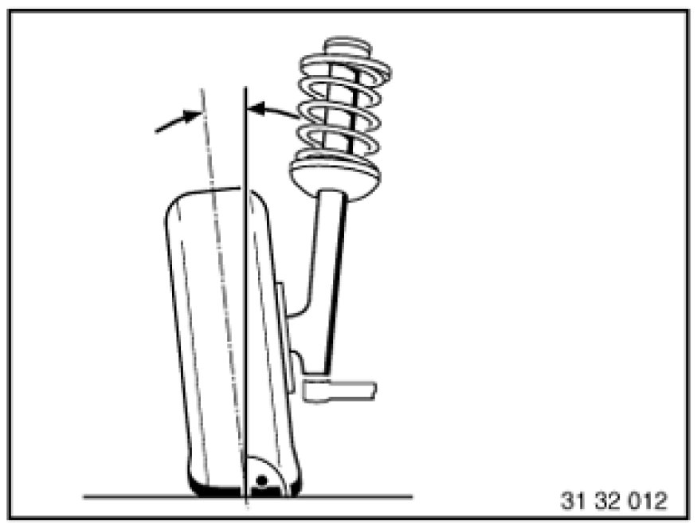
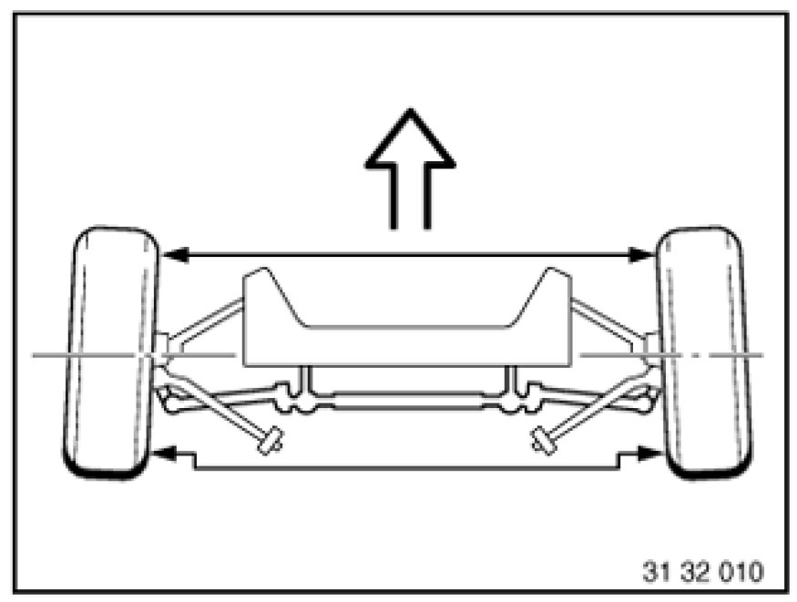
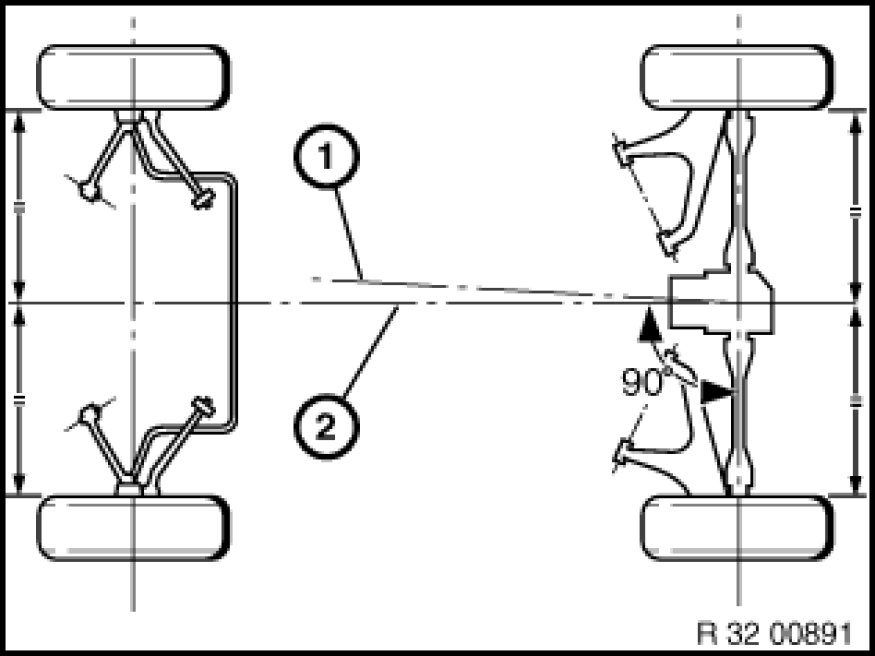
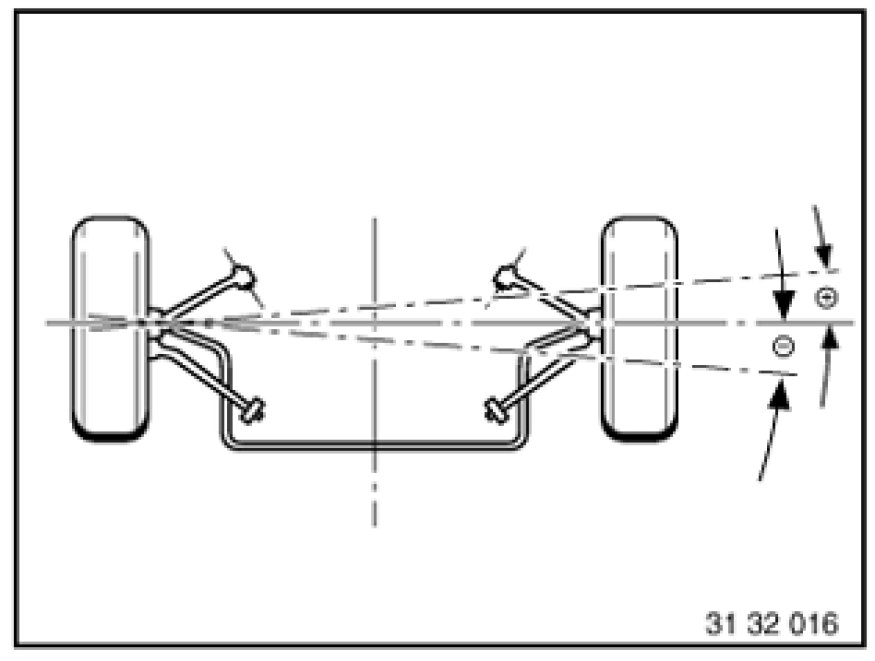

5. Chassis-Related Terms
5. Chassis-Related Terms
5.1 Toe-differential angle

- The toe-differential angle (a) is the angular position of the internal wheel on the curve in relation to the external wheel on the curve when driving round bends. The steering is designed such that the angular position of the wheels in relation to each other changes as the steering angle increases.
- In ideal cases, the wheel axes meet at point D in any steering position (except for straight ahead).
5.2 Camber

- The camber is the angle of inclination of the wheel in relation to the vertical.
5.3 Toe-in

- The toe-in is the reduction in the distance between the front of the wheels and the rear. The toe-in prevents the wheels from moving apart whilst driving (wobbling and grinding).
5.4 Castor

- The castor is the kingpin angle seen from the side in the opposite direction of travel. The line through the centre of the spring strut mount and control arm ball joint corresponds to the kingpin.
5.5 Geometrical drive axis / symmetrical axis

- (1) The geometrical drive axis is the line bisecting the angle of the overall rear wheel toe. The measurements of the front wheels relate to this axis.
- (2) The symmetrical axis represents the centre line through the front and rear axes.
5.6 Wheel displacement angle

- The wheel displacement angle is the angular deviation of the connecting line of the wheel contact points in relation to a line running at 90° to the geometrical drive axis. The wheel displacement angle is positive if the right-hand wheel is displaced to the front, and is negative if it is displaced to the rear.
5.7 Kingpin offset

- The kingpin offset is the distance from the centre of the wheel contact point to the contact point of the kingpin extrapolation.